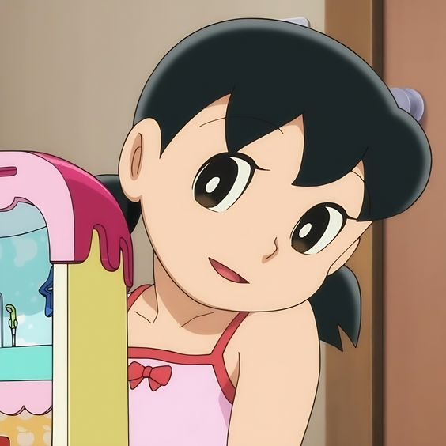

Nobita and Shizuka from Doraemon exhibit a strong compatibility that could make their marriage a fulfilling and harmonious one. They share a deep bond of friendship that has developed over time, starting from their childhood. This friendship is built on mutual understanding, trust, and shared experiences, providing a solid foundation for their relationship. They possess qualities that complement each other. Nobita's kindness and empathy balance out Shizuka's calm and composed nature. Their differences create a harmonious dynamic, allowing them to support and uplift each other in various situations. Nobita's caring nature and Shizuka's gentle demeanor create a nurturing environment within their relationship.

Moreover, they share similar values, such as kindness, loyalty, and compassion. Their shared moral outlook on life allows them to approach challenges and conflicts with a sense of unity and understanding. They can find common ground and make joint decisions based on their shared values, promoting harmony within their marriage.
Throughout their adventures with Doraemon and interactions with their friends, Nobita and Shizuka have shown personal growth and development. They have overcome obstacles together, learning important life lessons along the way. Their marriage would offer further opportunities for growth, as they continue to inspire and motivate each other to pursue their dreams, overcome challenges, and reach their full potential.
Furthermore, Nobita and Shizuka's shared goals and dreams align, adding a sense of purpose and unity to their relationship. Whether it is striving for a better future or making a positive impact, their shared vision creates a strong bond that propels them forward as a team.While conflicts and difficulties are inevitable in any relationship, the key lies in effective communication, understanding, and compromise. Nobita and Shizuka's foundation of friendship and their commitment to each other would provide a solid framework for resolving conflicts and maintaining a healthy and thriving marriage.
Overall, based on their deep friendship, mutual understanding, complementary qualities, shared values, personal growth, and common goals, it is reasonable to believe that Nobita and Shizuka would have a strong and fulfilling marriage if they were to marry within the Doraemon universe.
Nobita and Shizuka have a strong bond of friendship and understanding. They have known each other since childhood and have shared many adventures and experiences together. This foundation of friendship could serve as a solid base for their married life, as they already know each other's strengths, weaknesses, and quirks.

Nobita and Shizuka possess qualities that could complement each other well. Nobita's kindness and empathy can balance out Shizuka's calm and composed nature. They could provide support and stability to each other in times of need, creating a harmonious partnership.
Both Nobita and Shizuka value kindness, loyalty, and compassion. Their similar outlook on life could help them navigate challenges together and approach situations with a shared sense of morality. This alignment of values can contribute to a strong emotional connection and understanding.
Nobita and Shizuka have shown that they deeply care for each other's well-being. They provide emotional support and encouragement in various situations, uplifting each other when faced with obstacles. This unwavering support could play a significant role in their married life, fostering a sense of security and trust.
Through their adventures with Doraemon and their interactions with their friends, Nobita and Shizuka have grown as individuals. Their marriage could provide further opportunities for personal growth and development. They could inspire and motivate each other to pursue their dreams, overcome challenges, and become better versions of themselves.
Nobita and Shizuka often share similar goals and dreams, such as creating a better future or making a positive impact on the world. Their shared vision could create a strong sense of unity and purpose within their marriage, as they work together towards common objectives.
It's also worth noting that the development of Nobita and Shizuka's relationship and their potential marriage is open-ended in the Doraemon series, allowing fans to interpret and imagine their future together based on their own perspectives and preferences. Ultimately, the compatibility and success of a marriage depend on the individuals involved and their willingness to nurture their relationship with love, understanding, and continuous effort.